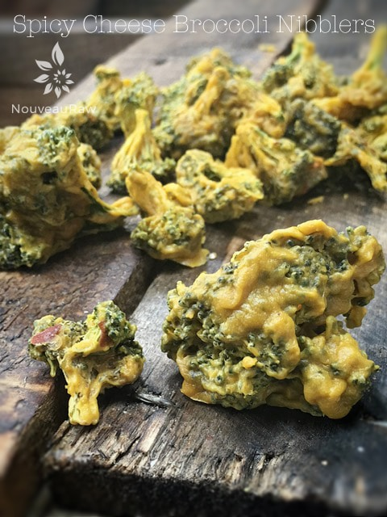

Spicy Cheese Broccoli Nibblers

~ raw, vegan, gluten-free ~
Update: I have been doing some “Spring cleaning (in the winter)” in the Nouveau Raw library of recipes, and I found this one that I created almost 2 years ago but failed to share!
Mercy Amie Sue, where are your manners?! I just can’t keep up with myself sometimes. Lol So, the write-up on this recipe may seem a little out-of-order in my timeline of releasing recipes. The important thing is that I am sharing it now… right? :) Am I forgiven?
This recipe may sound odd to you at first, but you will just have to trust me when I say that it turned out yummy! About a week ago I went through my fridge, looking to see what was needing to be used up. I had a huge bag of broccoli staring right at me. I pulled it out and sat it on the counter.
What to do, what to do? I have some great recipes for marinating it for different dishes, but it would still have left me with oodles left over. Then I had a crazy hair-brained idea… coat it with my spicy cheese sauce, and through it in the dehydrator.
So I proceeded to break the broccoli into small florets. After it was all said and done, I had 24 cups worth! I whipped up a double batch of the cheese sauce and poured it over the florets.
I will admit that the picture above isn’t really mouth-watering looking, but these came out YUMMY! They are awesome to have around when you are looking for a savory snack. I encourage you to give these little nibblers a try!
Ingredients:
- 2 red bell peppers, seeded and roughly chopped
- 2 jalapeno peppers, seeded and roughly chopped or 1 1/2 tsp red pepper flakes
- 2 Tbsp lemon juice
- 1 Tbsp water
- 2 cup raw cashews, soaked for 2+ hours
- 3 Tbsp nutritional yeast
- 2 small garlic clove
- 1 tsp Himalayan pink salt
- 24 cups broccoli florets
Preparation:
- Add the bell peppers, jalapeños, lemon juice, and water into a high-speed blender. Blend until the pepper is broken done nicely.
- Add the cashews, nutritional yeast, garlic, and salt, then again blend until smooth. This can take up to 3-5 minutes, depending on the blender. Stop every once in a while to scrape the sides down.
- Put the broccoli in a large bowl then pour the blended mixture over it and gently massage it in until all the florets are coated.
- Place it on the teflex sheets that come with the dehydrator, sprinkle with salt and dehydrate at 145 degrees (F) for 1 hour, then reduce to 115 degrees (F) for about 6-8 hrs. If they aren’t crispy enough, leave them in a bit longer.
- Store in an airtight container on the counter for 1-2 weeks. This will depend on dry you made them in the dehydrator and the humidity level in your house.
Culinary Explanations:
- Why do I start the dehydrator at 145 degrees (F)? Click (here) to learn the reason behind this.
- When working with fresh ingredients, it is important to taste test as you build a recipe. Learn why (here).
- Don’t own a dehydrator? Learn how to use your oven (here). I do however truly believe that it is a worthwhile investment. Click (here) to learn what I use.
© AmieSue.com